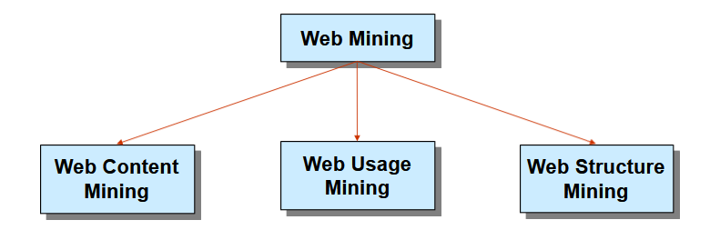
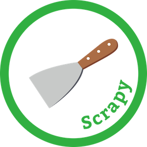
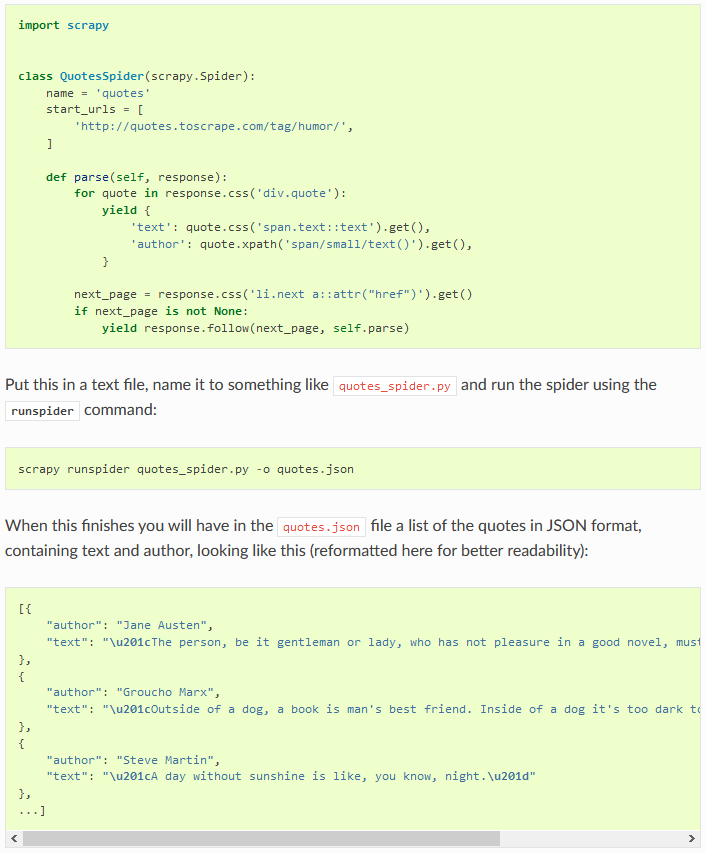
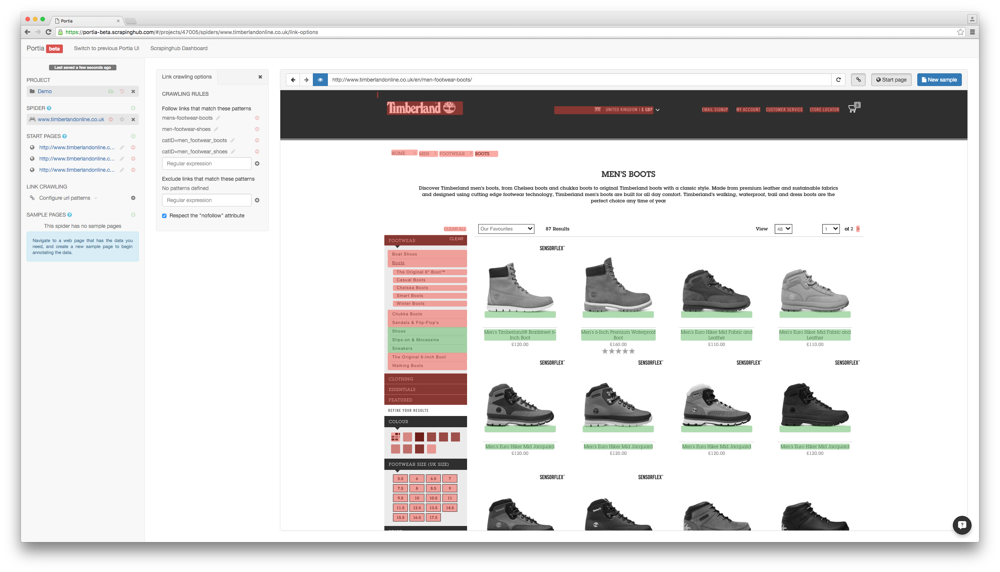
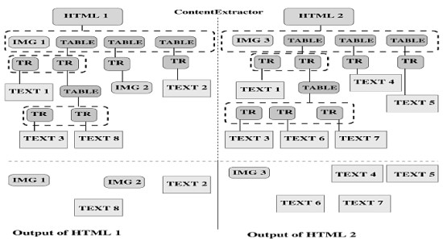
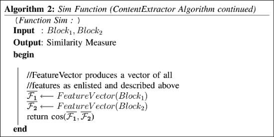

| Image | Source |
|---|---|
|  | https://slideplayer.com/slide/6127331/ |
|  | https://apify.com/apify/scrapy-executor |
|  | http://docs.scrapy.org/en/latest/intro/overview.html |
| https://medium.com/@octoparsejerry/best-data-scraping-tools-for-2019-top-10-reviews-4a686061a184 | |
|  | https://portia.readthedocs.io/en/latest/examples.html |
|  | https://ieeexplore.ieee.org/abstract/document/1490530 |
 | https://ieeexplore.ieee.org/abstract/document/1490530 |
|  | https://ieeexplore.ieee.org/abstract/document/1490530 |